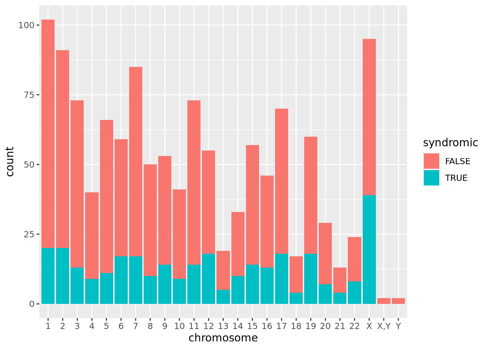

library(tidyverse)Import Data
Section 1
We can hide the output for specific cells such as the messages about potential library conflicts:
Data frames/tibbles get pretty-printed:
sfari_genes <- read_csv("data/SFARI-Gene_genes_10-23-2025release.csv")Rows: 1255 Columns: 9
── Column specification ────────────────────────────────────────────────────────
Delimiter: ","
chr (4): gene_symbol, chromosome, gene_name, genetic_category
dbl (5): status, gene_score, syndromic, eagle, number_of_reports
ℹ Use `spec()` to retrieve the full column specification for this data.
ℹ Specify the column types or set `show_col_types = FALSE` to quiet this message.sfari_genesSome code cells produce lengthy output:
sfari_genes$gene_symbol [1] "ABAT" "ABCA10" "ABCA13" "ABCA2"
[5] "ABCA7" "ABCE1" "ABL2" "ACAP2"
[9] "ACE" "ACHE" "ACTB" "ACTL6B"
[13] "ACTN4" "ACY1" "ADA" "ADCY1"
[17] "ADCY3" "ADCY5" "ADGRB1" "ADGRL1"
[21] "ADK" "ADNP" "ADORA3" "ADSL"
[25] "ADSS2" "AFF2" "AGAP1" "AGAP2"
[29] "AGAP5" "AGBL4" "AGMO" "AGO1"
[33] "AGO2" "AGO3" "AGO4" "AGTR2"
[37] "AHDC1" "AHI1" "AHNAK" "AKAP9"
[41] "ALDH1A3" "ALDH1L1" "ALDH5A1" "ALG6"
[45] "AMPD1" "AMT" "ANK2" "ANK3"
[49] "ANKRD11" "ANKRD17" "ANKS1B" "ANP32A"
[53] "ANXA1" "AP1S2" "AP2M1" "AP2S1"
[57] "APBA2" "APBB1" "APH1A" "ADORA2A"
[61] "ADRB2" "AR" "ARF3" "ARHGAP11B"
[65] "ARHGAP32" "ARHGAP5" "ARHGEF10" "ARHGEF2"
[69] "ARHGEF9" "ARID1A" "ARID1B" "ARID2"
[73] "ARHGAP30" "ARNT2" "ARX" "ASAP2"
[77] "ASB11" "ASB14" "ASH1L" "ASMT"
[81] "ASPM" "ASTN2" "ASXL3" "ATP10A"
[85] "ATP1A1" "ATP1A3" "ATP2B1" "ATP2B2"
[89] "ATP6V0A2" "ATP9A" "ATRX" "ATXN2"
[93] "AUTS2" "AVPR1A" "AZGP1" "BACE1"
[97] "BAIAP2L1" "BAZ2B" "BBS4" "BCAS1"
[101] "BCKDK" "BCL11A" "BCL11B" "BCORL1"
[105] "BICRA" "BIRC6" "BRAF" "BRCA2"
[109] "BRD4" "BRINP3" "BRSK2" "BRWD3"
[113] "BSN" "BST1" "BTAF1" "BTRC"
[117] "C12orf57" "C15orf62" "C4B" "CA6"
[121] "CACNA1A" "ASB9" "AVPR1B" "BICDL1"
[125] "CACNA1B" "CACNA1C" "CACNA1D" "CACNA1E"
[129] "CACNA1F" "CACNA1G" "CACNA1H" "CACNA1I"
[133] "CACNA2D1" "CACNA2D3" "CACNB1" "CACNB2"
[137] "CACNG2" "CADM1" "CADM2" "CADPS"
[141] "CADPS2" "CAMK2A" "CAMK2B" "CAMK2D"
[145] "CAMK4" "CAMTA2" "CAPN12" "CAPRIN1"
[149] "CARD11" "CASK" "CASKIN1" "CASZ1"
[153] "CAT" "CBX1" "CC2D1A" "CCDC88C"
[157] "CCDC91" "CCIN" "CCNG1" "CCNK"
[161] "CCSER1" "CCT4" "CD276" "CD38"
[165] "CDC42BPB" "CDH10" "CDH11" "CDH13"
[169] "CDH2" "CDH22" "CDH8" "CDH9"
[173] "CAPZA2" "CBX4" "CDK13" "CDK16"
[177] "CDK19" "CDK5RAP2" "CDK8" "CDKL5"
[181] "CDON" "CECR2" "CELF2" "CELF4"
[185] "CELF6" "CEP135" "CEP290" "CEP41"
[189] "CERT1" "CGNL1" "CHAMP1" "CHD1"
[193] "CHD2" "CHD3" "CHD4" "CHD7"
[197] "CHD8" "CD99L2" "CHD9" "CHKB"
[201] "CHM" "CHMP1A" "CHRM3" "CHRNA7"
[205] "CHRNB3" "CHST2" "CIB2" "CIC"
[209] "CLASP1" "CLCN4" "CLIP2" "CLN8"
[213] "CLTC" "CLTCL1" "CMIP" "CMPK2"
[217] "CNGB3" "CNKSR2" "CNOT1" "CNOT3"
[221] "CNR1" "CNTN3" "CNTN4" "CNTN5"
[225] "CNTN6" "CNTNAP2" "CNTNAP3" "CNTNAP4"
[229] "CNTNAP5" "COL12A1" "COL28A1" "CORO1A"
[233] "CPEB4" "CPSF7" "CPT2" "CPZ"
[237] "CREBBP" "CRMP1" "CSDE1" "CSMD1"
[241] "CSMD2" "CSMD3" "CSNK1E" "CSNK1G1"
[245] "CSNK2A1" "CSNK2B" "CTCF" "CTNNA2"
[249] "CTNNA3" "CTNNB1" "CTNND1" "CTNND2"
[253] "CTR9" "CTTNBP2" "CUL2" "CUL3"
[257] "CUL4B" "CUL7" "CUX1" "CUX2"
[261] "CX3CR1" "CYFIP1" "CYFIP2" "CYLC2"
[265] "CYP27A1" "DAGLA" "DAPP1" "DCC"
[269] "DDC" "DDHD2" "DDX23" "DDX3X"
[273] "CTPS1" "CXXC5" "CYP11B1" "DDX53"
[277] "DEAF1" "DENR" "DEPDC5" "DGKI"
[281] "DHCR7" "DHX30" "DHX9" "DIP2A"
[285] "DIP2C" "DIPK2A" "DISC1" "DIXDC1"
[289] "DLG1" "DLG2" "DLG4" "DLGAP1"
[293] "DENND2B" "DLGAP2" "DLGAP3" "DLL1"
[297] "DLX2" "DLX3" "DLX6" "DMD"
[301] "DMPK" "DMWD" "DMXL2" "DNAH10"
[305] "DNAH17" "DNAH3" "DNER" "DNM1"
[309] "DNMT3A" "DOCK1" "DOCK4" "DOCK8"
[313] "DOLK" "DPP10" "DPP3" "DPP4"
[317] "DPP6" "DPYD" "DPYSL2" "DPYSL3"
[321] "DRD2" "DRD3" "DSCAM" "DNAJC5"
[325] "DOT1L" "DST" "DUSP15" "DVL3"
[329] "DYDC1" "DYDC2" "DYNC1H1" "DYRK1A"
[333] "EBF3" "ECPAS" "EEF1A2" "EFR3A"
[337] "EGR3" "EHMT1" "DRD1" "EIF3F"
[341] "EIF3G" "EIF4E" "EIF4G1" "EIF5A"
[345] "ELAVL2" "ELAVL3" "ELOVL2" "ELP2"
[349] "ELP4" "EMSY" "EN2" "ENOX2"
[353] "ENPP1" "EP300" "EP400" "EPC2"
[357] "EPHA1" "EPHB1" "EPHB2" "EPPK1"
[361] "ERBIN" "ERG" "ERMN" "ESR2"
[365] "ESRRB" "ETFB" "EXOC3" "EXOC5"
[369] "EXOC6" "EXOC6B" "EXT1" "FABP4"
[373] "FABP5" "FAM47A" "FAM98C" "FAN1"
[377] "FAT1" "FBN1" "FBRSL1" "FBXL13"
[381] "FBXO11" "FBXO33" "FBXO40" "FCRL6"
[385] "FEZF2" "FGA" "FGF13" "FGF14"
[389] "FGFR1" "FHIT" "FLNA" "FMR1"
[393] "FOXG1" "FOXP1" "FOXP2" "FRG1"
[397] "FRK" "FRMD5" "FRMPD4" "FRRS1L"
[401] "FRYL" "FXN" "G3BP2" "GABBR2"
[405] "GABRA3" "GABRA4" "GABRB2" "GABRB3"
[409] "GABRA2" "GABRG2" "GABRG3" "GALNT10"
[413] "GALNT13" "GALNT14" "GALNT2" "GALNT8"
[417] "GAS2" "GATM" "GBE1" "GDA"
[421] "GFAP" "GGNBP2" "GIGYF1" "GIGYF2"
[425] "GLI3" "GLIS1" "GLO1" "GLRA2"
[429] "GNAI1" "GNAS" "GNB1L" "GNB2"
[433] "GPC4" "GPC5" "GPC6" "GPD2"
[437] "GPHN" "GPR37" "GPR85" "GPX1"
[441] "GRB10" "GRIA1" "GRIA2" "GRIA3"
[445] "GRID1" "GRID2" "GRID2IP" "GRIK2"
[449] "GRIK3" "GRIK4" "GRIK5" "GRIN1"
[453] "GRIN2A" "GRIN2B" "GRIP1" "GRK4"
[457] "GRM5" "GRM7" "GTF2I" "GUCY1A2"
[461] "H1-4" "H2BC11" "H3-3B" "H4C11"
[465] "H4C3" "H4C5" "HACE1" "GSTM1"
[469] "HCFC1" "HCN1" "HDAC4" "HDAC8"
[473] "HDLBP" "HECTD1" "HECTD4" "HECW2"
[477] "HEPACAM" "HERC1" "HERC2" "HIVEP2"
[481] "HIVEP3" "HLA-A" "HLA-B" "HLA-DPB1"
[485] "HLA-DRB1" "HLA-G" "HMGN1" "HNRNPD"
[489] "HNRNPF" "HNRNPH2" "HNRNPK" "HNRNPR"
[493] "HNRNPU" "HNRNPUL2" "HOMER1" "HOXA1"
[497] "HRAS" "HS3ST5" "HSD11B1" "HTR1B"
[501] "HTR2C" "HTR3A" "HTR3C" "HUWE1"
[505] "HYDIN" "ICA1" "IGF1" "IKZF1"
[509] "IL1R2" "IL1RAPL1" "HNRNPL" "IL1RAPL2"
[513] "ILF2" "IMMP2L" "INPP1" "INTS1"
[517] "INTS6" "IQGAP3" "IQSEC2" "IRF2BPL"
[521] "IRX5" "ITGA8" "ITGB3" "ITPR1"
[525] "ITSN1" "JARID2" "JMJD1C" "KANK1"
[529] "KANSL1" "KAT2B" "KAT6A" "KAT6B"
[533] "KATNAL1" "KATNAL2" "KCNA2" "KCNA3"
[537] "KCNB1" "KCNC1" "KCNC2" "KCND2"
[541] "KCND3" "KCNH1" "KCNH5" "KCNH7"
[545] "KCNJ10" "KCNJ15" "KCNK7" "KCNMA1"
[549] "KCNN2" "KCNQ2" "KCNQ3" "KCNS3"
[553] "KCTD13" "KDM1B" "KDM2A" "KDM2B"
[557] "KDM3A" "KDM3B" "KDM4B" "KDM4C"
[561] "KDM5A" "KDM5B" "KDM1A" "KDM5C"
[565] "KDM6A" "KDM6B" "KHDRBS2" "KIAA0232"
[569] "KIAA1586" "KIF13B" "KIF14" "KIF1A"
[573] "KIF5C" "KIRREL3" "KIZ" "KLF16"
[577] "KLF7" "KLHL20" "KMT2A" "KMT2B"
[581] "KMT2C" "KMT2E" "KMT5B" "KNG1"
[585] "KPTN" "KRR1" "KRT26" "LAMA1"
[589] "LAMB1" "LARP1" "LAS1L" "LDB1"
[593] "LDLR" "LEMD3" "LEO1" "LEP"
[597] "LHX2" "LILRB2" "LIN7B" "LMTK3"
[601] "LMX1B" "LNPK" "LRBA" "LRFN2"
[605] "LRFN5" "LRP1" "LRP2" "LRRC1"
[609] "LRRC4" "LRRC4C" "LZTR1" "MACF1"
[613] "MACROD2" "MAGEC3" "MAGEL2" "MAOA"
[617] "MAOB" "MAP1A" "MAP1B" "MAP4K1"
[621] "MAP4K4" "MAPK3" "MAPK8IP1" "MAPK8IP3"
[625] "MAPT" "MARK1" "MARK2" "MAST1"
[629] "MAST3" "MBD1" "MBD3" "MBD4"
[633] "MBD5" "MBD6" "MBOAT7" "MCM4"
[637] "MCM6" "MCPH1" "MDGA2" "MECP2"
[641] "MED12L" "MED13" "MED13L" "MED23"
[645] "MEF2C" "LZTS2" "MAPT-AS1" "MEGF10"
[649] "MEGF11" "MEIS2" "MEMO1" "MET"
[653] "METTL14" "METTL26" "MFRP" "MIB1"
[657] "MINK1" "MIR137" "MKX" "MLANA"
[661] "MRTFB" "MSANTD2" "MSL2" "MSL3"
[665] "MSR1" "MSRA" "MSX2" "MTF1"
[669] "MTHFR" "MTOR" "MTSS2" "MUC12"
[673] "MUC4" "MYCBP2" "MYH10" "MYH4"
[677] "MYH9" "MYLK" "MYO16" "MYO1E"
[681] "MYO5A" "MYO5C" "MYO7A" "MYO9B"
[685] "MYOCD" "MYT1L" "NAA10" "NAA15"
[689] "NAALADL2" "NACC1" "NASP" "NAV2"
[693] "NAV3" "NBEA" "NCAPH2" "NCKAP1"
[697] "NCKAP5" "NCOA1" "NCOR1" "NEDD4"
[701] "NEGR1" "NEO1" "NEXMIF" "NF1"
[705] "NFE2L3" "NFIA" "NFIB" "NFIX"
[709] "NINL" "NIPA1" "NIPA2" "NIPBL"
[713] "NLGN1" "NLGN2" "NLGN3" "NLGN4X"
[717] "NLGN4Y" "NOTCH1" "NOVA2" "NPFFR2"
[721] "NPTN" "NR1D1" "MNT" "NDUFA5"
[725] "NKX2-2" "NMT1" "NPAS2" "NPAS3"
[729] "NR2F1" "NR3C2" "NR4A2" "MSNP1AS"
[733] "NRCAM" "NRP2" "NRXN1" "NRXN2"
[737] "NRXN3" "NSD1" "NSD2" "NSMCE3"
[741] "NTNG1" "NTNG2" "NTRK1" "NTRK2"
[745] "NTRK3" "NUAK1" "NUDCD2" "NUP133"
[749] "NUP155" "NXF1" "NXPH1" "OCRL"
[753] "OFD1" "OPHN1" "OR1C1" "OR2T10"
[757] "OR52M1" "OTUD7A" "OTX1" "OXT"
[761] "OXTR" "P2RX5" "P4HA2" "PABPC1"
[765] "PACS1" "PACS2" "PAFAH1B2" "PAH"
[769] "PAK1" "PAK2" "PAPOLG" "PARD3B"
[773] "OR2M4" "PATJ" "PAX5" "PAX6"
[777] "PBX1" "PC" "PCCA" "PCCB"
[781] "PCDH10" "PCDH11X" "PCDH15" "PCDH19"
[785] "PCDH9" "PCDHA1" "PCDHA10" "PCDHA11"
[789] "PCDHA12" "PCDHA13" "PCDHA2" "PCDHA3"
[793] "PCDHA4" "PCDHA5" "PCDHA6" "PCDHA7"
[797] "PCDHA8" "PCDHA9" "PCDHAC1" "PCDHAC2"
[801] "PCLO" "PCM1" "PDCD1" "PDE1C"
[805] "PDE3B" "PDHA1" "PDK2" "PDZD8"
[809] "PEBP4" "PER1" "PER2" "PEX7"
[813] "PHB1" "PHF12" "PHF14" "PHF2"
[817] "PHF21A" "PHF3" "PHF7" "PHF8"
[821] "PHIP" "PHLPP1" "PHRF1" "PIK3CA"
[825] "PIK3CG" "PIK3R2" "PITX1" "PJA1"
[829] "PKD1" "PLAA" "PLAUR" "PLCB1"
[833] "PLCD4" "PLEKHA8" "PLN" "PLPPR4"
[837] "PLXNA3" "PLXNA4" "PLXNB1" "PNPLA7"
[841] "POGZ" "POLA2" "POLR2A" "POLR3A"
[845] "POMGNT1" "POMT1" "PON1" "POT1"
[849] "POU3F3" "PPFIA1" "PPFIA3" "PPM1D"
[853] "PPP1R1B" "PPP1R9B" "PPP2CA" "PPP2R1B"
[857] "PPP2R5C" "PPP2R5D" "PPP3CA" "PPP5C"
[861] "PREX1" "PRICKLE1" "PRICKLE2" "PRKAR1B"
[865] "PRKCA" "PRKCB" "PRKD1" "PRKD2"
[869] "PRKDC" "PRKN" "PRODH" "PRPF19"
[873] "PRPF39" "PRPF8" "PRR12" "PRR14L"
[877] "PRR25" "PRUNE2" "PSD3" "PSMC5"
[881] "PSMD11" "PSMD12" "PSMD6" "PTBP2"
[885] "PTCHD1" "PTCHD1-AS" "PTDSS1" "PTEN"
[889] "PTGS2" "PTK7" "PTPN11" "PTPN4"
[893] "PTPRB" "PTPRC" "PTPRD" "PTPRT"
[897] "PUF60" "PXDN" "PYHIN1" "QRICH1"
[901] "RAB11FIP4" "RAB11FIP5" "RAB2A" "RAB39B"
[905] "RAB43" "RAC1" "RAD21" "RAD21L1"
[909] "RAI1" "RALA" "RALGAPB" "RANBP17"
[913] "RAP1A" "RAPGEF4" "RASSF5" "RBBP5"
[917] "RBFOX1" "PTPRS" "RBM27" "REEP3"
[921] "RELN" "RERE" "RFX3" "RFX4"
[925] "RFX7" "RGS7" "RHEB" "RICTOR"
[929] "RIMS1" "RIMS2" "RIMS3" "RLIM"
[933] "RNF135" "RNF25" "RNF38" "RNU2-2"
[937] "RNU4-2" "RNU5B-1" "ROBO2" "RORA"
[941] "RORB" "RPH3A" "RP11-1407O15.2" "RPL10"
[945] "RPS6KA2" "RPS6KA3" "RSRC1" "RUNX1T1"
[949] "SACS" "SAE1" "SAMD11" "SASH1"
[953] "SATB1" "SATB2" "SBF1" "SCAF1"
[957] "SCAF4" "SCFD2" "SCGN" "SCN1A"
[961] "RHOXF1" "RIT2" "SCN2A" "RPS10P2-AS1"
[965] "SCN3A" "SCN4A" "SCN8A" "SCN9A"
[969] "SCP2" "SDC2" "SEMA5A" "SENP1"
[973] "SENP6" "SERPINE1" "SET" "SETBP1"
[977] "SETD1A" "SETD1B" "SETD2" "SETD5"
[981] "SETDB1" "SETDB2" "SEZ6L2" "SF3B1"
[985] "SGSH" "SGSM3" "SH3RF1" "SH3RF3"
[989] "SHANK1" "SHANK2" "SHANK3" "SHOX"
[993] "SIK1" "SIN3A" "SIN3B" "SKI"
[997] "SLC12A5" "SLC1A1" "SLC1A2" "SLC22A15"
[1001] "SLC22A9" "SLC23A1" "SLC24A2" "SLC25A12"
[1005] "SLC25A27" "SLC25A39" "SLC27A4" "SLC29A4"
[1009] "SLC35B1" "SLC35G1" "SLC38A10" "SLC45A1"
[1013] "SLC4A10" "SLC6A1" "SLC6A3" "SLC6A4"
[1017] "SLC6A8" "SLC7A3" "SLC7A5" "SLC7A7"
[1021] "SLC9A1" "SLC9A6" "SLC9A9" "SLCO1B3"
[1025] "SLFN5" "SLITRK2" "SLITRK5" "SMAD4"
[1029] "SMAP2" "SMARCA2" "SMARCA4" "SMARCC2"
[1033] "SMC1A" "SMC3" "SMG6" "SMURF1"
[1037] "SNAP25" "SNCAIP" "SND1" "SNTG2"
[1041] "SNX14" "SNX5" "SOD1" "SON"
[1045] "SORCS3" "SOS2" "SOX5" "SOX6"
[1049] "SPARCL1" "SPAST" "SPEN" "SPP2"
[1053] "SPRY2" "SPTBN1" "SRCAP" "SRGAP3"
[1057] "SRPRA" "SRRM2" "SRSF1" "SRSF11"
[1061] "SSR4" "SSRP1" "ST7" "ST8SIA2"
[1065] "STAG1" "STX1A" "STXBP1" "STK39"
[1069] "STXBP5" "STYK1" "SUPT16H" "SYAP1"
[1073] "SYBU" "SYCE1" "SYN1" "SYN2"
[1077] "SYNCRIP" "SYNE1" "SYNGAP1" "SYNJ1"
[1081] "SYP" "SYT1" "SYT17" "TAF1"
[1085] "TAF1C" "TAF4" "TAF6" "TANC2"
[1089] "TAOK1" "TAOK2" "TBC1D23" "TBC1D31"
[1093] "TBC1D5" "TBCEL" "TBCK" "TBL1X"
[1097] "TBL1XR1" "TBR1" "TBX1" "TBX22"
[1101] "TCEAL1" "TCF20" "TCF4" "TBCB"
[1105] "TCF7L2" "TECTA" "TEK" "TERB2"
[1109] "TERF2" "TET2" "TET3" "TFB2M"
[1113] "TFE3" "TGM1" "THBS1" "THRA"
[1117] "TLE3" "TLK2" "TLN2" "TM4SF19"
[1121] "TM4SF20" "TM9SF4" "TMEM134" "TMEM39B"
[1125] "TMLHE" "TNPO3" "TNRC6B" "TNRC6C"
[1129] "TNS2" "TOP2B" "TOP3B" "TPO"
[1133] "TRAF7" "TRAP1" "TRAPPC2L" "TRAPPC6B"
[1137] "TRAPPC9" "TRIM23" "TRIM32" "TRIM33"
[1141] "TRIM8" "TRIO" "TRIP12" "TRPC4"
[1145] "TRPC5" "TRPC6" "TRPM1" "TRPM3"
[1149] "TRPM6" "TRPM7" "TRRAP" "TSC1"
[1153] "TSC2" "TSHZ1" "TSHZ3" "TSPAN17"
[1157] "TSPAN4" "TSPAN7" "TSPOAP1" "TSPYL2"
[1161] "TTI2" "TTN" "TUBGCP5" "U2AF2"
[1165] "UBAP2L" "UBE3A" "UBE3C" "UBN2"
[1169] "UBR1" "UBR3" "UBR5" "TDO2"
[1173] "UBE2H" "UGGT1" "UIMC1" "UNC13A"
[1177] "UNC5D" "UNC79" "UNC80" "UPF2"
[1181] "UPF3B" "USH2A" "USP15" "USP24"
[1185] "USP27X" "USP30" "USP45" "USP7"
[1189] "USP9X" "USP9Y" "VAMP2" "VASH1"
[1193] "VCP" "VDR" "VEZF1" "VIL1"
[1197] "VPS13B" "VPS54" "VSIG4" "VWA7"
[1201] "WAC" "WASF1" "WDFY3" "WDFY4"
[1205] "WDR26" "WDR37" "WDR5" "WNK3"
[1209] "WNT1" "WWOX" "WWP1" "XPC"
[1213] "XPO1" "XRCC6" "YEATS2" "YTHDC2"
[1217] "YWHAE" "YWHAG" "YWHAZ" "YY1"
[1221] "ZBTB16" "ZBTB18" "ZBTB20" "ZBTB21"
[1225] "ZBTB47" "ZBTB7A" "ZC3H11A" "ZC3H4"
[1229] "ZFHX3" "ZFHX4" "ZFX" "ZFYVE26"
[1233] "ZMIZ1" "ZMYM2" "ZMYM3" "ZMYND11"
[1237] "ZMYND8" "ZNF18" "ZNF292" "ZNF385B"
[1241] "ZNF462" "ZNF517" "ZNF532" "ZNF536"
[1245] "ZNF548" "ZNF559" "ZNF626" "ZNF644"
[1249] "ZNF711" "ZNF713" "ZNF774" "ZNF804A"
[1253] "ZNF827" "ZSWIM6" "ZWILCH" sfari_genes %>%
mutate(
syndromic = as.logical(syndromic),
chromosome = factor(chromosome, levels = str_sort(unique(chromosome), numeric = TRUE))
) %>%
ggplot(aes(x = chromosome, fill = syndromic)) +
geom_bar()
ggsave("output/fig1.pdf", width = 6, height = 5)Section 2
Markdown
We can use all kind of Markdown features!
Here is a link to our lovely lab website.
- Here
- is
- a
- bulleted
- list